In order to perform this operation, it is necessary to have a device with internet access and the EUDI Wallet app installed, such as a smartphone.
This is the first page where the user can choose which credentials they want to issue.
On this first page, you can observe 3 sets of distinct items:
The different credentials: Certificate of Residence (MSO Mdoc), EHIC (MSO Mdoc), Employee ID (MSO Mdoc), etc..
And finally, 2 types of Grants: Authorization Code Grant, Pre-Authorization Code Grant.
First Page
The “IBAN (MSO Mdoc)” option will be used as an example, but other options that use the PID Authentication method can also be used.
By default, the selected option in the Grant will be the Authorization Code Grant, however, in this case, any of the Grants can be used.
Finally, just click the "Submit" button to proceed.
Step 1: Select the credentials you want to issue.
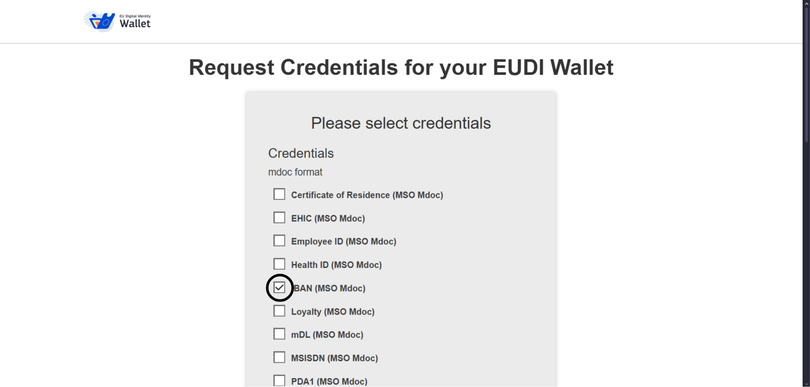
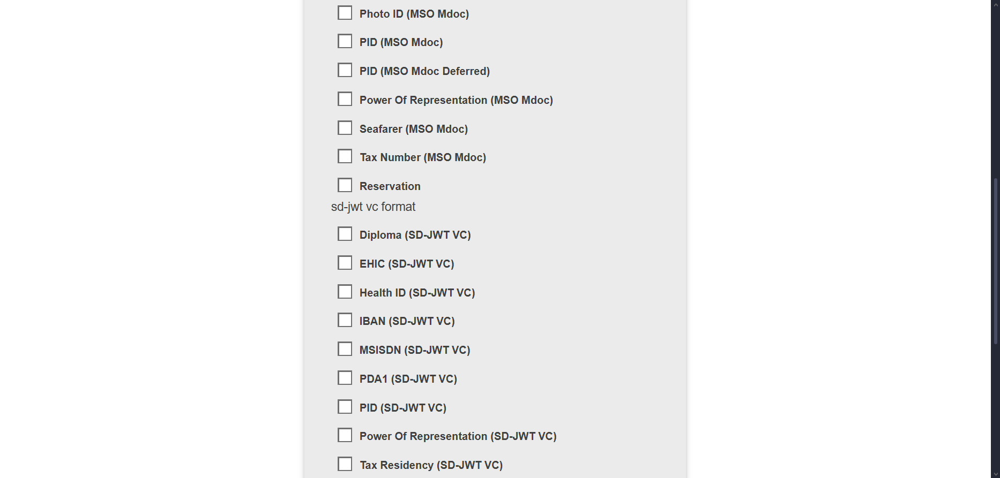
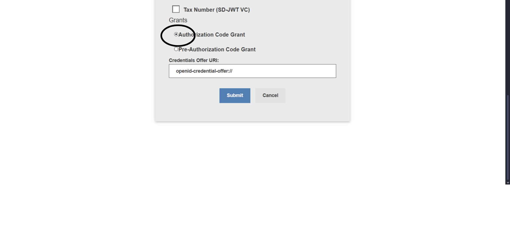
A QR code will now be generated.
If you are already using a device with the EUDI Wallet app, there is no need to scan the QR code. Simply press the "Use EUDIW" button, and you will be redirected directly to the app.
If you are not on a device with the EUDI Wallet app, such as a computer, you will need to scan the QR code with a device that has internet access and the EUDI Wallet app. After scanning, you will be redirected to the app.
Step 2: QR Code Scanning
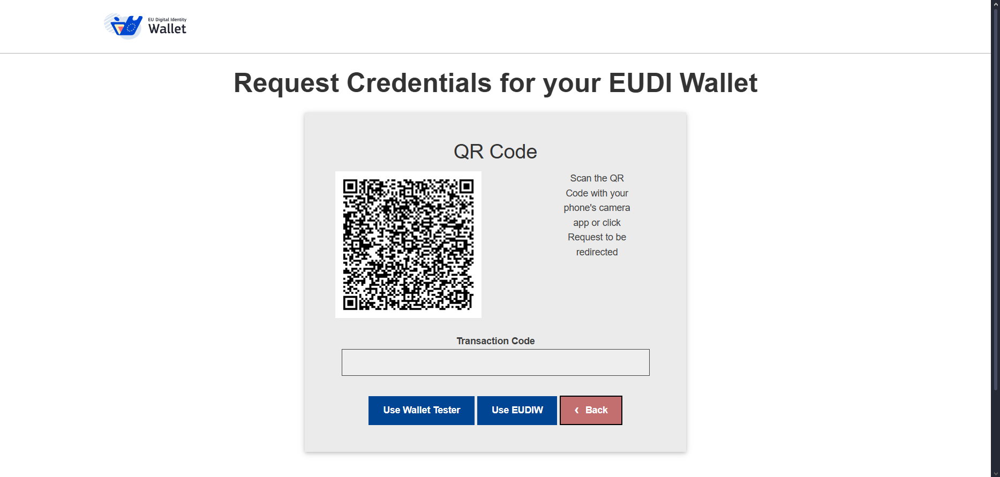
After being redirected to the EUDI Wallet app, you will see what will be issued to your wallet. In this case, only "IBAN (MSO Mdoc)" will appear.
To continue, simply press "Add".
Step 3: Confirmation in EUDI Wallet
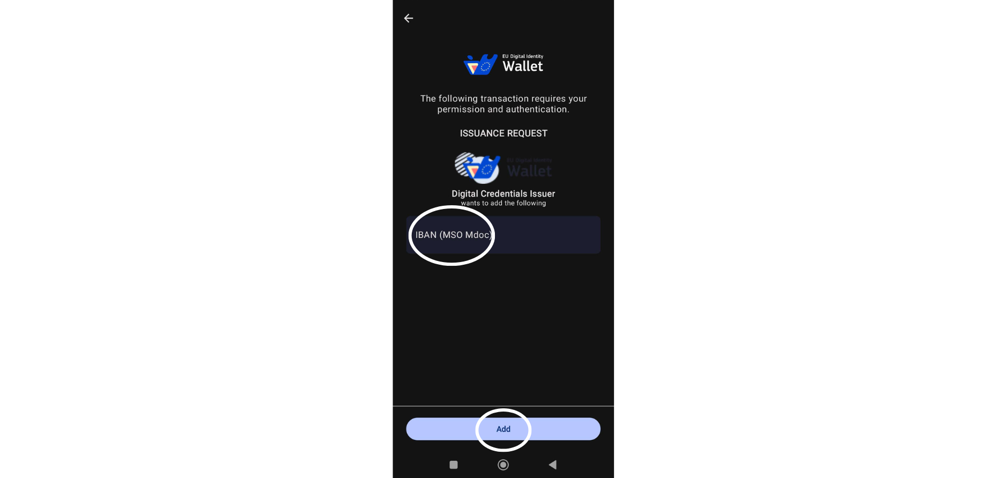
You will now be asked to select which Authentication method you would like to use.
Select the "PID Authentication" option and then click the "Submit" button to continue.
Step 4: Enter Basic information
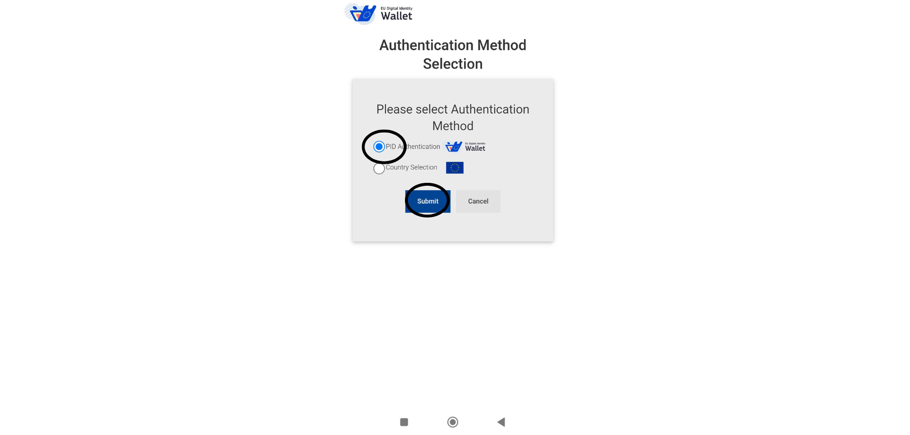
A QR code will now be generated.
If you are already using a device with the EUDI Wallet app, there is no need to scan the QR code. Simply press the "Request" button, and you will be redirected directly to the app.
If you are not on a device with the EUDI Wallet app, such as a computer, you will need to scan the QR code with a device that has internet access and the EUDI Wallet app. After scanning, you will be redirected to the app.
Step 5: QR Code Scanning
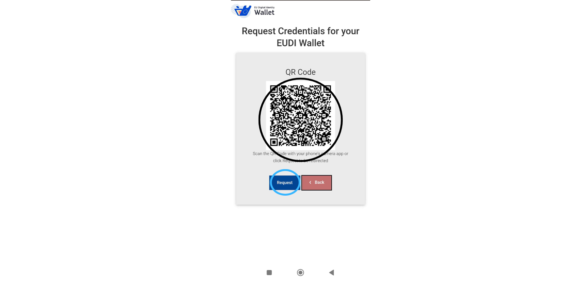
You will be asked if you authorize the wallet to share the PID data.
Just click "Share" to proceed.
Step 6: EUDI Remote Verifier
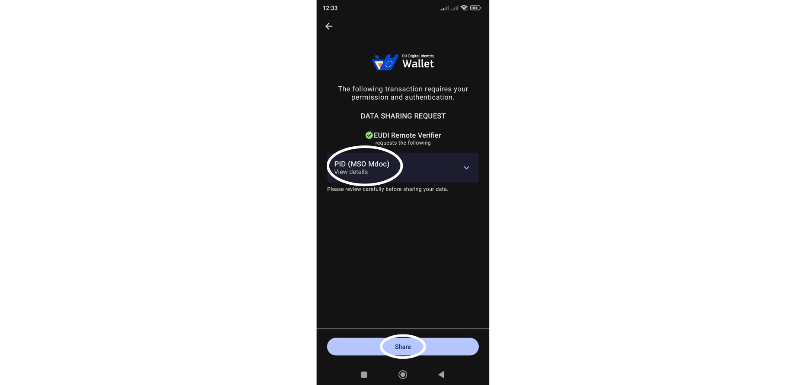
Enter your wallet access PIN to validate the sharing of PID data.
Step 7: Insert PIN
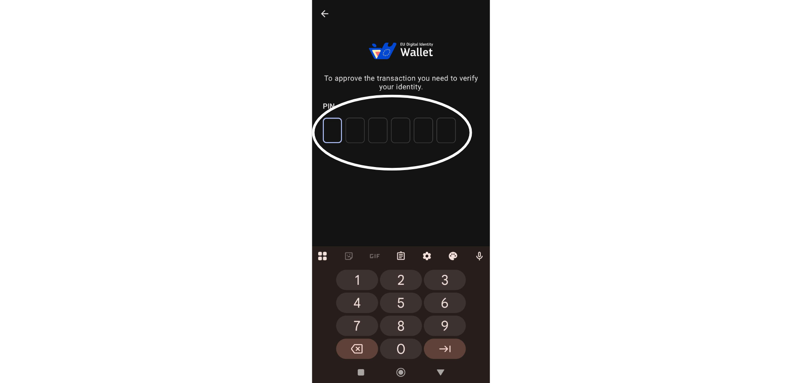
If everything goes well, a new page will appear saying that the PID has been successfully shared.
You just need to click “close” to continue.
Step 8: PID successfully shared
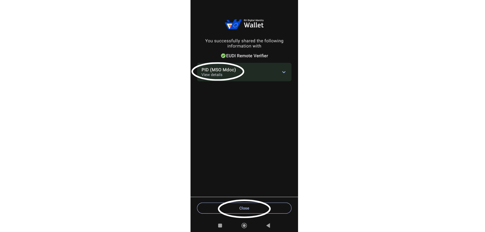
Now you will need to enter your IBAN details, as this was the credential you chose at the beginning.
If you chose another option in this step, this form will not appear, but rather the one associated with the credentials you chose.
To proceed after filling out the form, simply click on the “Confirm” button at the bottom of the page.
Note: Keep in mind that if you select the "FormEU" option, none of the data entered is verified or validated. Therefore, when issuing credentials to your wallet using this option, the data will not be valid and cannot be used as such. No data entered will be saved.
Step 9: Fill out the form
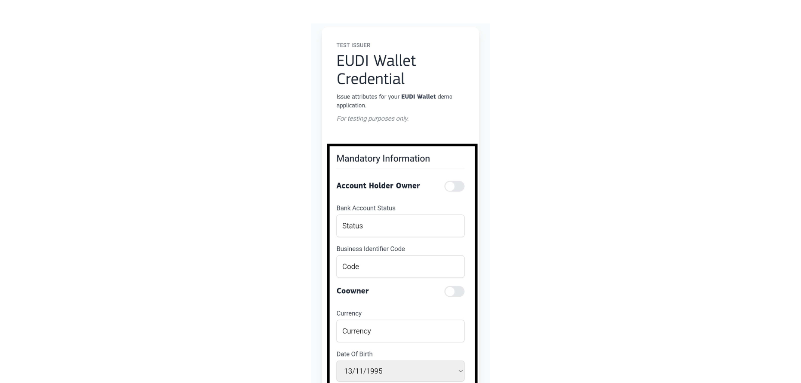
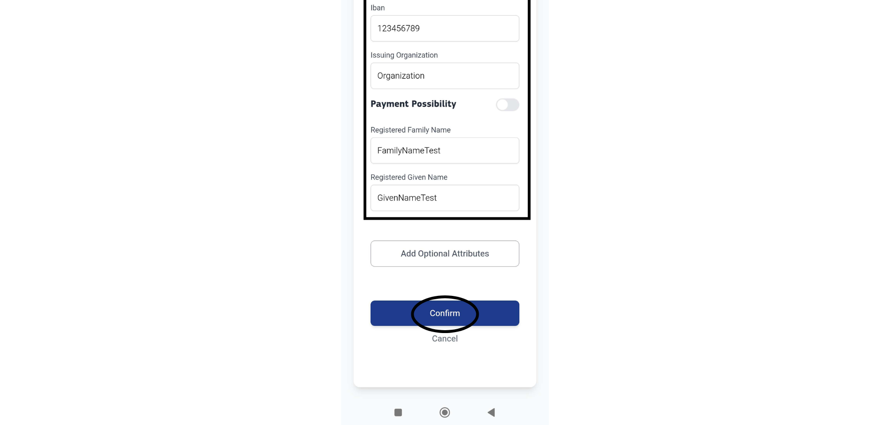
Here, you can review the information you entered in the previous form to verify and confirm the data.
If everything is correct, click the "Authorize" button.
Step 10: Confirmation of the entered information
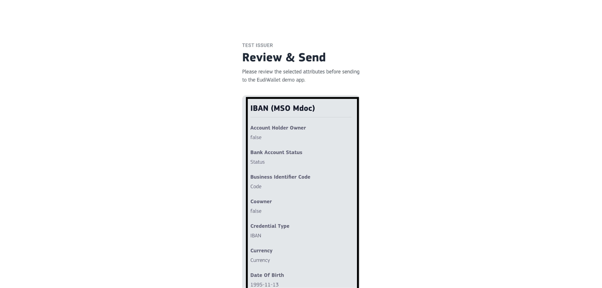
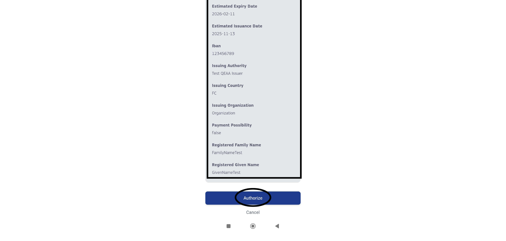
You will be redirected back to the EUDI Wallet app, where, if everything is correct and goes smoothly, you will see a page indicating success.
At this point, you will have issued the selected credentials to your wallet.